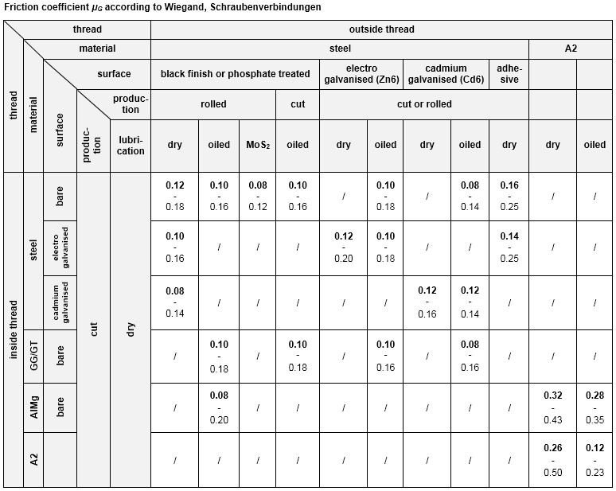
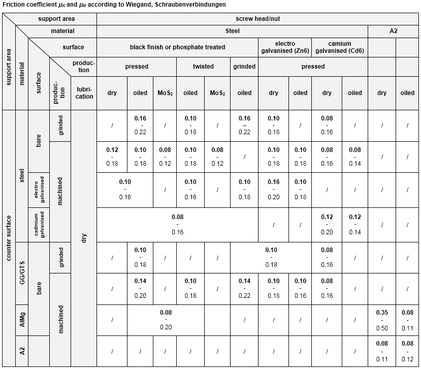

|
|
|


摩擦系数
在 KISSsoft 中，您可以指定一个摩擦系数区间。最小值用于 FM 和 FMmax 的计算，最大值用于 FMmin 和 FM/αA 的计算。因此，摩擦系数值的离散会影响到拧紧扭矩的离散。

图 42.9：螺纹中的摩擦系数。

图 42.10：头部支承面和螺母支承面中的摩擦系数。
您也可以按照 VDI 2230 Sheet 1 中表 A5 的附录所规定的摩擦等级 A 到 E 进行选型，以定义摩擦系数的值。螺纹、头部支承面和螺母支承面的最小和最大摩擦系数随后将被导入 KISSsoft。
Coefficients of friction
In KISSsoft, you can specify an interval for coefficients of friction. The minimum value is used for calculation with FM and FMmax and the maximum value is used for calculation with FMmin and FM/αA. The scattering of the coefficient of friction value therefore affects the scatter of the tightening torques.
Figure 42.9: Coefficients of friction in the thread.
Figure 42.10: Coefficients of friction in the head bearing area and nut bearing area.
You can also use the sizing according to friction classes A to E as specified in VDI 2230 Sheet 1, Annex to Table A5 to define the values for the coefficients of friction. The minimum and maximum coefficients of friction for the thread, the head bearing area and the nut support are then imported into KISSsoft.